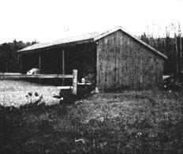
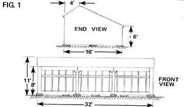
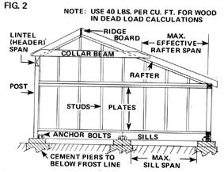
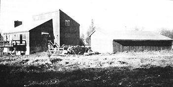

Almost everyone has a storage problem of one sort or another. And that used to include John Frost of Grafton, Massachusetts . . . until two years ago, that is, when John found a way to come out ahead in "the race for space".
storage space for just a little more than $100 per square foot:
John Frost Nothing beats having an honest-for-real barn when you're in need of a sheltered place to park the old Farmall or stash 20 extra bales of hay. Unfortunately, though, many back-to-the-landers-myself included-don't have a barn, and can't afford the investment of time and money necessary to build one. (Which helps explain why most of us have more tools and machinery sitting out in the open, exposed to all kinds of weather, than is right and proper.)
' Then again, if you're "fresh out" of storage space-and if (like me) you can't see your way clear to construct a genuine barn-it may interest you to know that you can come by all-weather storage space for slightly over $1.00 per square foot . . . if you'll just do the building yourself.
My new "did it myself" storehouse (see accompanying photos) contains approximately 500 square feet of floor space, took me six weekends to erect, and set me back only $528 for materials. The structure is functional, attractive, and sufficiently spacious for my needs (it holds-with ease-two cars, a tractor, and a canoe). And the shed meets all local construction codes . . . which means [A] it can handle the substantial snow loads of a typical New England winter, and [B] no building inspector can ever "throw the book at me" for non-compliance with The Rules.
The very first thing you should do if you decide to build a shed like mine is trek on down to your city clerk's office and obtain a copy of the local building code. (Some municipalities sell the book, others give the manual to anyone who asks for it, and still others yet have no copies of the guide for distribution in any manner. If you run into the last situation, however, there is an easy way to find out exactly what you'll have to do to keep the building inspector happy: just apply for a construction permit.)
If you're lucky enough to be able to take home a copy of the code book, you'll find that the volume offers a bonanza of useful information for the do-it-yourself builder. For example, the fourteen tables and appendices of my town's manual list such things as allowable spans for various sizes of rafters under given load conditions, load-bearing qualities of assorted soil types, and other hard-to-get technical info. As a result-ironically enough-that code book is one of the most valued volumes on my reference shelf.
There's an old saying that "an hour's planning will save three hours' work: one hour when the job is first done, and two more when you have to do it over". Believe me, this statement is just as true for the shed-builder as it is for the manufacturers of jumbo jets.
Plan ahead, then. Start by asking yourself how large a storehouse you really want. (And don't be too conservative in your estimate or, if you're like most people, you'll be wishing the shed were twice as big within six months of its completion.) A good idea is to decide how much space you need to corral your present inventory of unsheltered goods . . . and then add at least half again as much square footage to your projected building's floor plan.
Of course, before you get too carried away with the design of your own private warehouse, you'll have to face reality and ask yourself how large a storage building you can actually afford. Since prices do vary in different parts of the country, I highly recommend that you [1] compare the current cost of supplies in your area to the prices mentioned further on in this article, [2] modify my "buck per square foot" figure accordingly, and then [3] roughly calculate just how much your "dream shed" is going to set you back. If the price is out of the ballpark, you'll-naturally-have to think again about the size of your yet-to-be storehouse.
And have you chosen a site for the shed? And is that site reasonably level? Will you have to clear away trees or stumps before you can build? What about drainage: Are you absolutely certain that the first afternoon thunderstorm that comes along won't transform half your building's floor into a pig wallow or (worse yet) leave the shed waist deep in water? Go outside and drive some stakes into the ground to mark out the four corners of your proposed structure. Then sit down and think about what those stakes are trying to tell you. Take a long, hard look.
Naturally, you've planned to position the shed so that its open side faces away from the prevailing winds of winter. Likewise, it's a good idea-if you can-to locate the building downwind of something larger (your house, a row of tall trees, etc.), so that the little storage shed is at least partially "blanked out" during periods of heavy, blowing precipitation. Think and plan! Remember, if you have any complaints about the size, cost, or location of your structure after it's built, you'll have but one person to squarely place the blame on. And it sure won't be me!
Once you've chosen a suitable construction site and you know the approximate dimensions of your mini-warehouse, you'll want to concentrate on the structure's actual design. I chose the tried-and-true "carriage" style for my own shed, a configuration which-I think-rather effectively combines rustic charm with efficient use of materials and, more importantly, makes for easier construction.
If you've ever seen an authentic carriage shed alongside a 19th century farmhouse, you know that a good deal of oldtime Yankee foresight is evident in the general layout of such buildings. The pitched roof, for instance, ensures good drainage and helps to support heavy loads of, ice and snow . . . while the use of bays as basic modules permits flexibility where size is concerned. (Need more space? Add another bay!) For a truly practical all-weather storage structure, the carriage-style shed is hard to beat.
If you want to experiment a little with the design of your storage building-but you feel, perhaps, that you lack the necessary drafting or engineering know-how-check the larger libraries in your area for Architectural Graphic Standards by Charles G. Ramsey and Harold R. Sleeper ($44.95 from John Wiley & Sons). Between the advice contained in this tome and the info tucked away in the pages of your building code, you'll have grist for many an evening's reading and sketching!
You don't have to be a design draftsman to work up a usable set of plans for your mini-warehouse. (I should qualify that: Some building inspectors do, in fact, require buildersand that includes owner-builders-to submit professionally drafted plans for approval. Others will settle for a rather crude sketch. Moral: Visit city hall first . . . before you set pencil to paper.)
Crude sketch or detailed plans, all you need to make your building's drawings are a sharp pencil, a ruler, and a pad of graph paper. Keep in mind-no matter what the local building inspector asks for-that your plans must be detailed enough to [1] enable you to calculate the amount of lumber and other materials you'll need for the project, and [2] allow you-when the time comes-to cut and join beams in an orderly fashion.
OK. Pick a scale for your plans (say, one inch equals two feet). Then sketch front-view and side-view outlines of the shed, to scale (Fig. 1).
Next, from your front- and side-view drawings, determine the exact sizes of framing lumber that you'll need for the building. And strive for efficient use of materials. You may find, for example, that the load-bearing requirements and overall dimensions of your structure's roof are met by several combinations of rafter size and rafter spacing. However, only one such combination will require the fewest board feet of lumber, and that's the combination you're looking for.
Don't forget, too, that lumber is usually sold in multiples of two running feet. Which means that if your plans call for a number of nine-foot-long studs, you'll either have to [A] change the framing dimensions to an even number of feet (eight or ten), or [B] accept the fact that you're going to have a large stack of expensive cutoff ends to feed to the fireplace after the building is up.
As soon as you've settled on the most economical dimensions for your mini-warehouse, begin a detailed cross-section drawing (see Fig. 2) of the structure. Show all framing members to scale and you should be able to use the drawing to make up a complete list of all the materials you'll need to fabricate the shed.
While I don't deny that it may be well worth your while to scout up a supply of low-cost used lumber for the construction of your building, I do feel that-unless you happen to be long on time and short on cash-you should be extremely wary of offers of free henhouses, barns, and the like. That dilapidated old barn with the 45° list (which the owner says you can have "free" for the dismantling) may not contain enough sound, usable wood to justify the many backwrenching hours you'll spend ripping it apart. The final decision, of course, is up to you . . . but I prefer to stick with all-new lumber from a building supply house or a good local sawmill.
Once you've found a source of framing timbers, check with sawmills in your area for rough-cut boards to use as roofing and siding. (Fresh-cut, green, ungraded stock-which is all you really need for exterior siding-is vastly less expensive than the cured and graded material sold by commercial lumber dealers.) A visit to the sawmill will not only save you money, but will lift your spirits as well. The sight of all that pitch and sawdust flying-and the almost overpowering aroma of fresh-cut pine (and other woods)-is guaranteed to bring out the latent lumberjack in just about anyone!
Now that you know what you're going to build and where you're going to get the materials with which to build it, you're ready to start on your shed's foundation (if any).
A full foundation and floor are necessary only if you intend to heat the building . . . otherwise, it's hard to justify the expense and labor involved in pouring a concrete slab. Concrete columns spaced every six or eight feet along the load-bearing walls will support the structure just as well as a slab will and at a fraction of the cost. (In fact, a mix consisting of cement, stones, sand, and water should keep the cost of each pier to a very reasonable three or four dollars.)
The holes for your columns should be two feet in diameter and deep enough to penetrate the frost line (which-in the northeastern U.S.-lies three to four feet below the surface). Once you've filled each hole to within a couple inches of the top with mix, check the piers for level by the following procedure:
[1] Set an identical wide-bottomed block or container (I used inverted plastic buckets) on each of two adjacent piers, [2] lay a beam across the two upside-down pails, and [3] take a reading with a level along the top of the beam. If the beam is not level, add cement to the hole on the low side, and repeat the procedure. Do this for each pair of adjacent piers (making sure, as you go around the building, that you check every pier to both the one "behind" and the one "ahead") and you can be reasonably certain of ending up with a level foundation.
If you like, you can make a form into which concrete can be poured so that the top of each foundation pier is built up six to ten inches above the ground. Or you can simply leave every poured column flush with the earth's surface and lay a concrete block down (with its holes pointed up) atop each wet concrete piling. It's then easy to poke the hook end of a threaded tiedown bolt down through one of the holes in the block until the hook is embedded in the freshly poured concrete below. The holes in the block itself can also be filled with concrete at the same time. Result: A solid, substantial pier that extends to below frost line and to which (because of the tiedown bolt) one of the structural members of the building's frame can be quickly and securely attached.
Because the shed's sills carry whatever load is not borne by the foundation columns, pick something husky when you're deciding what size lumber to use here. For total peace of mind, I used double 2 X 8's. (If wood-nibbling insects inhabit your neck of the woods, be sure to coat the sills with preservative . . . no matter how big the beams are.)
Likewise, since your framing lumber is what holds the whole shebang up, you'll want to use only clear, dry, construction-grade beams for the skeleton of your storage building. Remember, this isn't the place to skimp on quality . . . so don't let cost considerations interfere with common sense. (When I built my shedwhich is to say, in the spring of 1974-good-quality framing beams sold for between 22 cents and 30 cents per board foot. And as a result, a major portion of my total expense went into the building's structural lumber.)
Something you should keep in mind is that the use of collar beams (Fig. 2) will almost double the load-bearing capacity of your shed's rafters. The strength of these beams is almost entirely a function of their depth (rather than width) . . . thus, there's no need to use thick material here. Put thin (but deep) collar beams under your rafters, and you'll not only save money on the beams themselves, but you'll also be able to use less rafter material.
As mentioned earlier, rough-sawn (green) boards can be used for the storage shed's roof decking and siding. You're right, of course, if you say that plywood goes on a lot faster . . . but the last time I checked, 3/4" plywood was selling for about 334 per square foot and rising, compared to the 11 cents to 16 cents per board foot being fetched by sawmill-fresh, random-length pine boards. A price difference like that translates into a whopping big savings in the final cost of this building. Why spend when you can save?
When you nail the vertical siding on, by the way, take care to butt each rough-sawn board tightly against the preceding one to keep the effects of shrinkage to a minimum. Naturally, the green boards will shrink a little as they dry out, and this will produce visible gaps. If the gaps bother you (or if you must have weathertight walls), shiplap the openings with thin furring strips. (For a good discussion of the art of building with green lumber, see "The Green Wood House"; pages 84-86, in MOTHER NO. 39.-The Editors.)
Finishing a building can be expensive . . . as anyone who's built a house, barn, garage, shop, etc., knows. And probably the most expensive "finishing touch" of all is the weatherproofing that you'll surely want to add.
To weatherproof my shed's roof, I applied asphalt shingles-which cost $12 per square (one square equals 100 square feet)-over black roofing paper. By comparison, roll asphalt roofing runs about two-thirds the cost and cedar shakes are almost twice as expensive as asphalt shingles.
Yes, you can simply let the walls of the shed weather. You'll find, however, that uncured pine tends to turn a blotchy black if left untreated (in contrast to cedar, which becomes silver-gray with time). Thus, it pays-if you plan to leave any siding and/or roofing exposed to the elements-to protect the wood with some sort of finish. I treated my shed with a semi-transparent preservative/stain.
The dirt floor can be covered with a couple of inches of 3/4" stones (about $4.00 per yard, delivered) to keep it looking neat and to prevent grass from growing inside the building. Pea stone is fancier . . . but, then again, it's also more expensive. (Caution: DON'T allow the stones to spread outside the confines of the shed if you intend to use a snow blower-rather than a snowplow-to clear snow from around the building during the winter.)
Whether you build a closet-sized toolshed or a 5,000-square-foot warehouse, the most important work you do on the building will be done in its planning and design. Do a sloppy job of charting out the construction, and you can look forward to huge cost (and time) overruns. Do an adequate job of preparation, however, and-like me-you'll be able to have all the storage space you need . . . for little more than $1.00 per square foot!
|
 |
 |
 |
|
 |
|
|